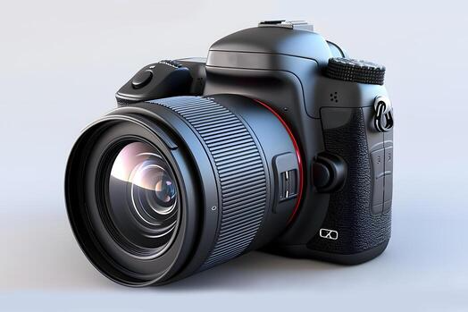
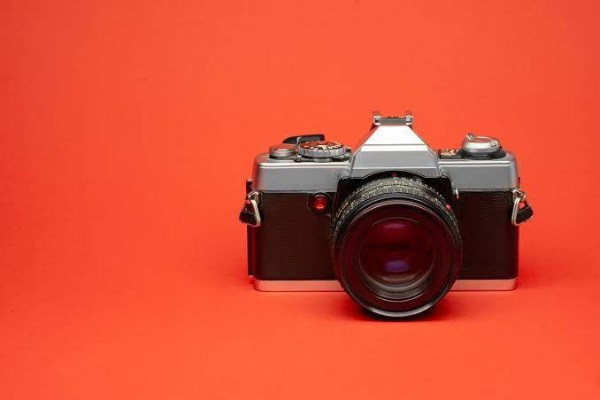
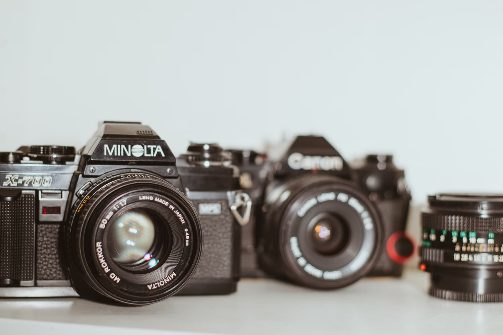
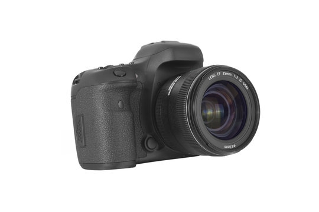

Notes on a product page
I was shopping for a lens and clicking through the photos on the listing. The gallery splits every photo down the middle. Hover the left half and the cursor turns into a back arrow. Hover the right half and it turns into a forward arrow.
So here is a small game. Start on the first photo and get to the last one. Click inside the photo as much as you want. The row of thumbnails underneath is off limits.




1
Everybody loses that one. Back and forward own the whole photo, so play and pause have nowhere to sit except on top of them. When you reach the video the split quietly turns off, and the thumbnails become the only way out. On a phone they sit below the fold.
The middle of the photo, where the lens actually sits, has no job at all. That felt like the place to put the thing people already want, which is a closer look.
Here is the idea. Leave the arrows out on the edges and give the middle half one job, which is to open the photo bigger. It does that same job on every frame, video included. Play and pause get a small button of their own down in the corner.
2
People look at the center of a photo because the subject sits there. A pointer heading sideways passes through the edges anyway, so the arrows stay easy to reach out there.
I gave the middle half the width. The slider in the tweaks panel moves it if you want to see how other splits feel.
| Left edge | Middle | Right edge | |
|---|---|---|---|
| A photo | Go back one | Open it full screen | Go forward one |
| The video | Go back one | Open it full screen and keep it playing | Go forward one |
Play and pause move to a small button in the bottom corner, so clicking the photo never stops the video by accident.
3
Same gallery, same rules, three zones. Get to the last photo without touching the thumbnails. Escape closes the full screen view.
The clip in both galleries is simulated: a still frame with a slow pan, a progress bar and a clock, because no real footage was supplied with the handoff. Everything the argument depends on is real and clickable: the zones, the controls, the full screen view.
Three things changed. The middle half opens whatever frame you are on. Play and pause became their own button with a label. Back and forward keep working on the video, so the thumbnails go back to being a shortcut.
I left the corner button alone. It does the same thing the middle does now, and on a touch screen it is the only thing there is.
4
5
The three zones are real buttons, so a keyboard walks through them in order. Everything below is what the version above actually does.
The full screen view opens as a dialog. Focus jumps to the close button, and escape sends it back to the zone that opened it.
Frame changes go out on a polite live region, so the count gets read without stealing focus. Hovering a zone never moves focus, so the pointer and the keyboard stay out of each other's way.
Arrow keys move between frames and the space bar plays or pauses the video. The current site does this too. The catch is that nobody finds out. There is no legend on the page, and every other control on the site is a big obvious button with an icon on it, so a keyboard shortcut is the last place a shopper looks. Shortcuts speed things up for people who already know they exist. They cannot carry the flow by themselves.
6
I keep flipping on what the middle should do to a still photo. Full screen feels right for the video, since it needs the room and the controls. For a photo, holding to zoom in place might feel quicker, and it keeps you where you were.
Which one would you try first?